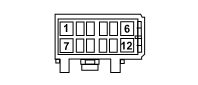

D030A DRIVER'S FRONT DOOR COUPLING (LEFT FRONT DOOR)
- Path
- Electrical equipment > 3 CONNECTORS > D INTERMEDIATE COUPLINGS > D030 DRIVER'S FRONT DOOR COUPLING > D030A DRIVER'S FRONT DOOR COUPLING (LEFT FRONT DOOR)
- Kind
- connector pinout (pin -> wire colour -> other end)
- Applies to
- all engines; all production periods; only with equipment: Right hand drive
- Interactive page
- https://sloeber94.github.io/elrnDB-fPnd/en/#/169003086
Applies to: all engines; all production periods; only with equipment: Right hand drive

Wiring | Colour |
|---|---|
See 30 LEFT FRONT DOOR | - |
Pin | Cable | Destination | |||
|---|---|---|---|---|---|
Sec.. | Colour | Node | Connect. | Pin | |
1 | 2,5 | ZN (violet with black stripe) | 1 | ||
2 | 0,35 | MV (brown with green stripe) | 2 | ||
3 | 0,35 | SV (pink with green stripe) | 1 | ||
4 | 0,35 | NS (black with pink stripe) | 2 | ||
5 | 0,35 | HN (grey with black stripe) | 5 | ||
6 | 2,5 | Z (violet) | 2 | ||
7 | 1,5 | H (grey) | 1 | ||
10 | 1,5 | RN (red with black stripe) | X | 3 | |
1 | |||||
10 | 1,5 | RN (red with black stripe) | 1 | ||
11 | 1,5 | BN (white with black stripe) | 2 | ||
12 | 1,5 | G (yellow) | 4 | ||